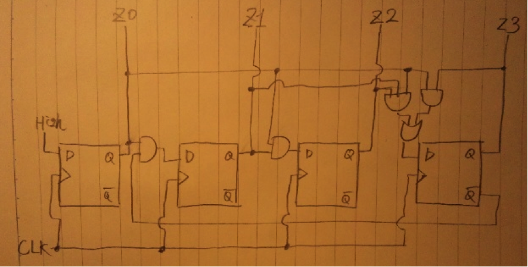

・Cmax
探索対象が見つからなかった場合なので
Cmax = n
・C ?
(i)探索対象がレコード中にある場合。
ある確率： phit = (1/2n) * n = 1/2
最小比較回数：Cmin = 1
平均比較回数：
(Cmin + Cmax)/2 * phit= (1+n)/2
1/2 の確率なので、
(1+n)/2 * 1/2 = (1+n)/4
(ii)探索対象がレコード中に無い場合
無い確率 : 条件より pmiss = 1/2
比較回数：必ずn回の比較がある。
n * pmiss = n/2
(i)(ii)より、全体としての平均比較回数は
(1+n)/4 + n/2 = (3n+1)/4
無解答
(i)m=1のとき
Cmax = 1 ?C = 1
(ii)m=2のとき
Cmax = 2
?C = 13/8
(iii)m=3のとき
Cmax = 3
?C = 17/8
(iv)m=4のとき
Cmax = 4
?C = 83/32
Cmax = m
?C = (m+2^m(m+1)-1)/2^(m+1)
チェイン法を用いて衝突を回避する。
k1 = 10mod17 = 10 , k2 = 1mod17 = 1 , k3 = 17mod17 = 0 , k4 = 97mod17 = 12
k5 = 21mod17 = 4 ,k6 = 4mod17 =4 , k7 = 39mod17 = 5 , k8 = 73mod17 = 5
| 0 | k3 |
| 1 | k2 |
| 2 | |
| 3 | |
| 4 | k5 -> k6 |
| 5 | k7 -> k8 |
| 6 | |
| 7 | |
| 8 | |
| 9 | |
| 10 | k1 |
| 11 | |
| 12 | k4 |
| 13 | |
| 14 | |
| 15 | |
| 16 |
phit = 1/8
1回の比較で発見：k1,k2,k3,k4,k5,k8
2回の比較で発見：k6,k8
1*(p1+p2+p3+p4+p5+p7)+ 2*(p6+p7) = 6/8 + 2*(2/8) = 6/8 + 4/8 = 5/4 回で見つかる
→Cバー
Cmax = 2
・逐次探索
探索開始位置付近に探索対象が来るようにすれば高速性が期待出来るが、完全にランダムの探索では確実ではあるが遅い。O(n)の時間が掛かる。
・2分探索
予めソート済みであることが条件ではあるが、O(log(n))の探索効率を実現する。
・ハッシュ表
十分に余裕のある容量のハッシュ表であるならばO(1)で探索可能。空き容量が狭くなると衝突が頻繁に発生し、速度が低下する。速度は容量、ハッシュ関数、衝突回避法などの組み合わせによって大きく左右される。
| Z3 | Z2 | Z1 | Z0 | nextZ3 | nextZ2 | nextZ1 | nextZ0 |
| 0 | 0 | 0 | 0 | 0 | 0 | 0 | 1 |
| 0 | 0 | 0 | 1 | 0 | 0 | 1 | 0 |
| 0 | 0 | 1 | 0 | 0 | 0 | 1 | 1 |
| 0 | 0 | 1 | 1 | 0 | 1 | 0 | 0 |
| 0 | 1 | 0 | 0 | 0 | 1 | 0 | 1 |
| 0 | 1 | 0 | 1 | 0 | 1 | 1 | 0 |
| 0 | 1 | 1 | 0 | 0 | 1 | 1 | 1 |
| 0 | 1 | 1 | 1 | 1 | 0 | 0 | 0 |
| 1 | 0 | 0 | 0 | 1 | 0 | 0 | 1 |
| 1 | 0 | 0 | 1 | 0 | 0 | 0 | 0 |

※問題の趣旨的には（１）の真理値表からカルノー図で設計？
無解答